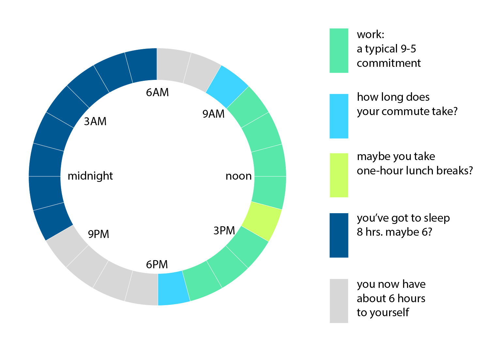
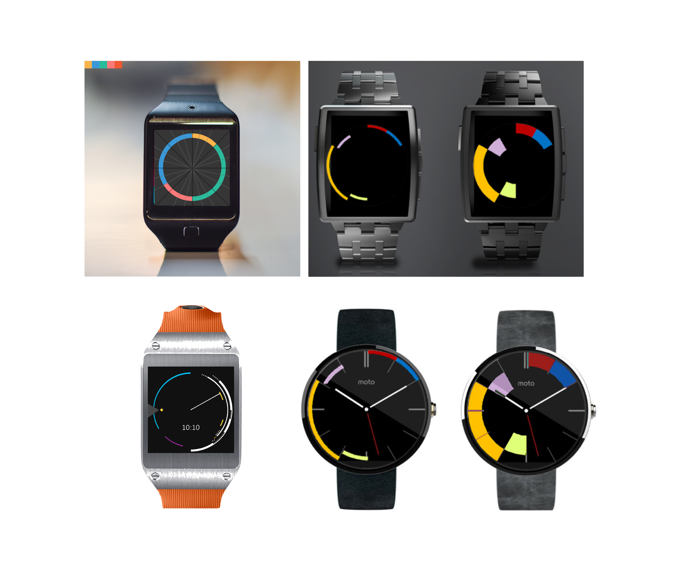
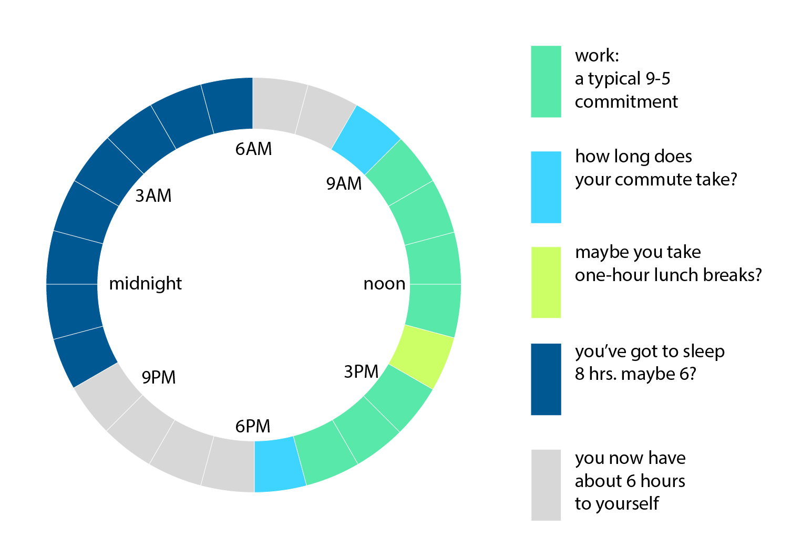
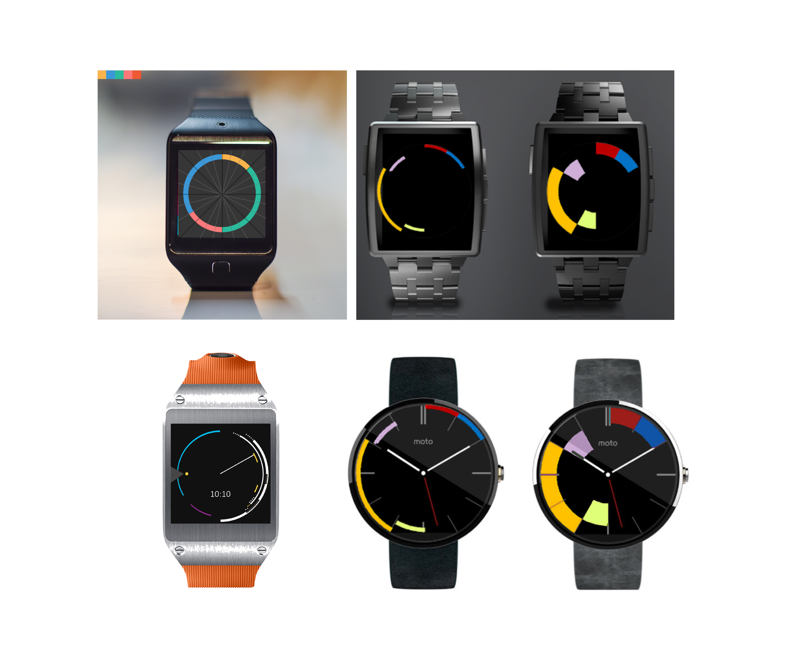

Calendar-based Time Display
What is the real question on our minds when we look at the time? We're not simply interested in the numbers that show on our watches, but the derived meaning is always with reference to some events, a context that's unique to every person. And this context of what the time means, is directly linked to one's event calendar.

Can there be a visual connection between the event schedule, and the watch dial itself?
Can we have a glanceable, snapshot view of our day, as the context to the question "what time is it?"
 


